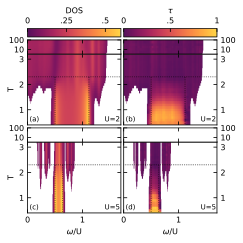
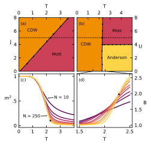

Dan Simpson1, Thomas Hodson2, Sophie Nadel3
1Various Locations, mainly London, United Kingdom; often inside his own head
2Blackett Laboratory, Imperial College London, London SW7 2AZ, United Kingdom
3Studio 301, Camberwell College of Arts, London, SE5 8UF, London, United Kingdom
Dan wrote this poem after a discussion with Tom about academia the value of abstract research. To present it we chose to emulate the visual style of a typical academic research paper, coupled with the rigid form of a sonnet. We pierce this structured environment by beginning to swap and jumble the words of the poem, moving away from the order to something more chaotic.
What is the value of a fact?
a question theoretical
answers are asymmetrical
given your comfort with abstracts.
You may feel personally attacked
or held within the metrical
we research the aesthetical –
how the world’s forces interact.
Boundaries expanded at college
lead to discoveries anew
this – far from being vanity –
increase our collective knowledge
applied, we hope, life will improve
for the good of humanity.


What is the value of a fact?
a question theoretical
answers are asymmetrical
given your comfort with abstracts.
You may feel personally attacked
or held within the metrical
we research the aesthetical –
how the world’s forces interact.
Boundaries expanded at college
lead to discoveries anew
this – far from being vanity –
increase our collective knowledge
applied, we hope, life will improve
for the good of humanity.